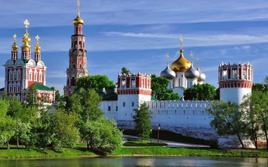
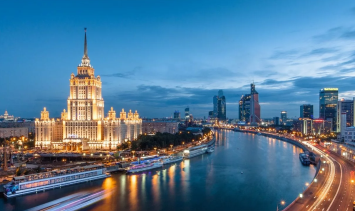
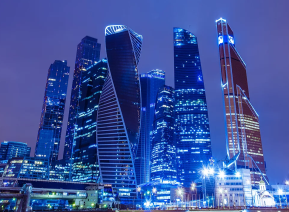
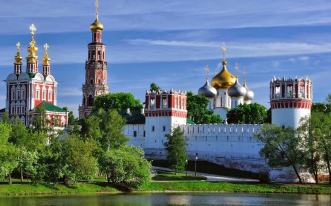
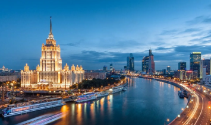
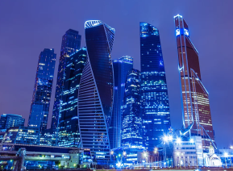

Call for papers
Organisation
Conference chairwoman:
Prof. Elena Kataeva
Conference co-chairmen
Prof. Andrey Kutin, MSUT Stankin, Russia
Prof. Konrad Wegener, ETH Zurich, Switzerland
International advisory board:
Prof. M. Bambach (Germany), Prof. F. Bleicher (Austria), Prof. A. Borovkov (Russia), Prof. Christian Brecher (Germany), Prof. E. Budak (Turkey), Prof. G. Byrne (Ireland), Prof. P.Dasic (Serbia), Prof. K. Droeder (Germany), Prof.W-G. Drossel (Germany), Prof. Ekorkmaz (Canada), Prof. K.Jemielniak (Poland), Prof. F.Grechnikov (Russia), Prof. F.Haas (Austria), Prof. B.Karpuschewski (Germany), Prof. B.Katalinic (Austria), Dr. M.Klyuev (Russia), Dr.J. Koriath (Germany), Prof. P. Krajnik (Sweden), Prof. L. Kroll (Germany), Prof. B. Lauwers (Belgium), Prof. G.Martinov (Bulgaria/Russia), Prof. A. Matsubara (Japan), Prof. S. Melkote (USA), Prof. M.Monno (Italy), Prof. R.Neugebauer (Germany), Prof. J. Rech (France), Prof. M.Schenk (Germany), Prof. R. Schröter (Brasil), Prof. I.Smurov (Russia/France), Prof. R.Teti (Italy), Prof. A. Vasiliev (Russia), Prof. T.Zaborowski (Poland)
Conference venue
In 1930, the Moscow State Machine Tool Institute was founded mainly as a school for engineers in the field of
Information
Address: Russia, Moscow region, 143025, Odintsovskiy district,village Skolkovo, St.Novaya, bld.100.
https://common.skolkovo.ru/ru/skolkovo/contacts/Contact
Conference secretariat:
Phone: +7 (499) 972-95-67
E-mail: acmt2020@stankin.ru
Important deadlines
Abstract submission deadline:
Notification of acceptance:
Full paper submission:
Notification of final acceptance provisional:
Notification of acceptance of full papers (definitive)
Final program announcement:
Conference:
01 Nov 2019
01 Dec 2019
15 Feb 2020
15 April 2020
15 May 2020
20 June 2020
9 - 11 Sep 2020
 





Conference topics
The conference will cover a range of topics:
Additive and hybrid technologies
High-Performance and Hard Machining
Digital Twins of Machine Tools, Processes and Manufacturing Systems
Precision, Ultra-Precision and Micro-Machining
Non-Conventional Processes (Laser, EDM, ECM)
Multiphysics and Multiscale Modelling
CAD/CAM/CAE - systems
Monitoring and Diagnostics
Sensors and robotics
Optimisation of Machining Processes
High-Precision Measurement
Cyber-physical production systems
Vision of the new manufacturing
The topics are not limited to the above listing.
Key Conference Speakers
The key speakers of the conference are planned President of the Fraunhofer Society (Germany) Prof. R. Neugebauer, Director of the Institute of Machine Tools and Technology of the Higher Technical School of Zurich Prof. K. Wegener, Rector of St. Petersburg Polytechnic University of Peter the Great, Academician of the Russian Academy of Sciences A. Rudskoy, heads of leading Russian corporations and enterprises (Roscosmos, Gazprom, KAMAZ)
Submission instruction
Publication
Registration fee: